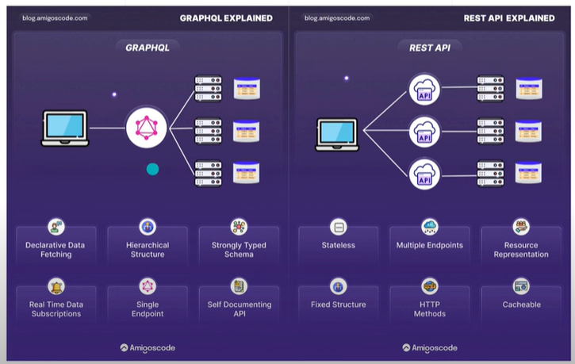
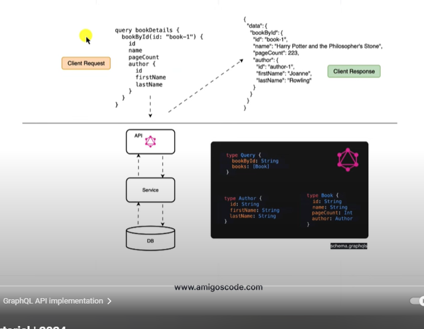
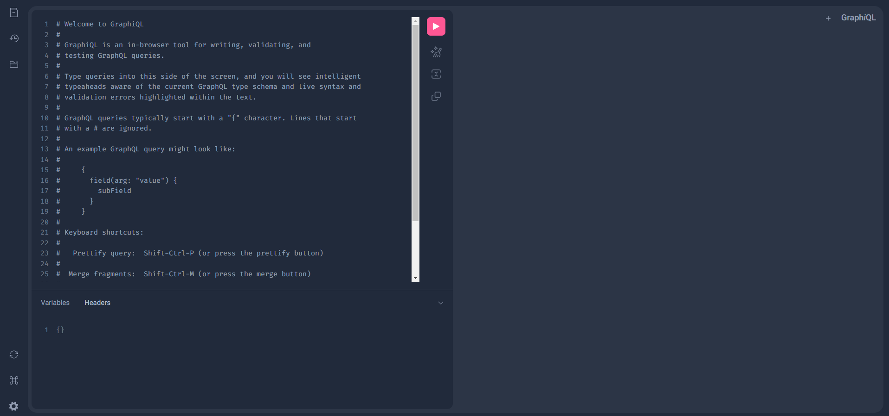
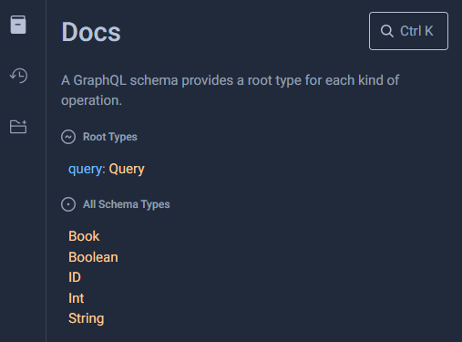
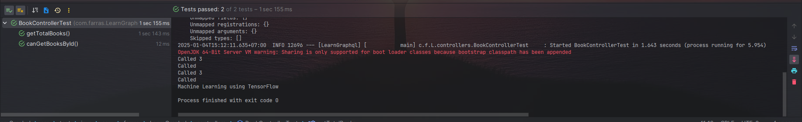

Preface Grapql
Bismillah dengan menyebut nama Allah
Pembukaan
Dari Abu Hurairah, Rasulullah -shallallahu ‘alaihi wa sallam- bersabda,
الْمُؤْمِنُ الْقَوِىُّ خَيْرٌ وَأَحَبُّ إِلَى اللَّهِ مِنَ الْمُؤْمِنِ الضَّعِيفِ وَفِى كُلٍّ خَيْرٌ احْرِصْ عَلَى مَا يَنْفَعُكَ وَاسْتَعِنْ بِاللَّهِ وَلاَ تَعْجِزْ وَإِنْ أَصَابَكَ شَىْءٌ فَلاَ تَقُلْ لَوْ أَنِّى فَعَلْتُ كَانَ كَذَا وَكَذَا. وَلَكِنْ قُلْ قَدَرُ اللَّهِ وَمَا شَاءَ فَعَلَ فَإِنَّ لَوْ تَفْتَحُ عَمَلَ الشَّيْطَانِ
“Mukmin yang kuat lebih baik dan lebih dicintai oleh Allah daripada mukmin yang lemah. Namun, keduanya tetap memiliki kebaikan. Bersemangatlah atas hal-hal yang bermanfaat bagimu. Minta tolonglah pada Allah, jangan engkau lemah. Jika engkau tertimpa suatu musibah, maka janganlah engkau katakan: ‘Seandainya aku lakukan demikian dan demikian.’ Akan tetapi hendaklah kau katakan: ‘Ini sudah jadi takdir Allah. Setiap apa yang telah Dia kehendaki pasti terjadi.’ Karena perkataan law (seandainya) dapat membuka pintu syaithon.”
(HR. Muslim)
Amanah dan Kuat
Kriteria-Kriteria Memilih Pekerja dan Pegawai
Landasan dalam memilih seorang pegawai atau pekerja hendaklah ia seorang yang kuat lagi amanah. Karena dengan kekuatan ia sanggup melaksanakan pekerjaan yang diembankan kepadanya, dan dengan amanah ia menunaikan sesuai dengan tugas dan tanggung jawabnya. Dengan amanah ia akan meletakkan perkara-perkara pada tempatnya. Dan dengan kekuatan ia sanggup menunaikan kewajibannya.
Allah telah memberitakan tentang salah seorang putri penduduk Madyan bahwasanya ia berkata kepada bapaknya tatkala Musa mengambilkan air untuk keduanya.
قَالَتْ إِحْدَاهُمَا يَا أَبَتِ اسْتَأْجِرْهُ ۖ إِنَّ خَيْرَ مَنِ اسْتَأْجَرْتَ الْقَوِيُّ الْأَمِينُ
“Ya bapakku, ambillah ia sebagai orang yang bekerja kepada kita. Karena sesungguhnya orang yang paling baik yang kamu ambil untuk bekerja (pada kita) ialah orang yang kuat lagi dapat dipercaya” [Al-Qashash/28:26]
Dan Allah berfirman tentang Ifrit dari bangsa Jin yang mengutarakan kesanggupannya kepada Sulaiman Alaihissalam untuk mendatangkan singgasana Balqis.
قَالَ عِفْرِيتٌ مِّنَ الْجِنِّ أَنَا آتِيكَ بِهِ قَبْلَ أَن تَقُومَ مِن مَّقَامِكَ ۖ وَإِنِّي عَلَيْهِ لَقَوِيٌّ أَمِينٌ
“Aku akan datang kepadamu dengan membawa singgasana itu kepadamu sebelum kamu berdiri dari tempat dudukmu ; sesungguhnya aku benar-benar kuat untuk membawanya lagi dapat dipercaya” [An-Naml/27:39]
Maknanya, ia menggabungkan antara kemampuannya untuk membawa dan mendatangkannya serta menjaga apa yang dibawanya.
Allah juga telah menceritakan tentang Yusuf Alaihissalam bahwasanya ia berkata kepada raja.
قَالَ اجْعَلْنِي عَلَىٰ خَزَائِنِ الْأَرْضِ ۖ إِنِّي حَفِيظٌ عَلِيمٌ
“Jadikanlahlah aku bendaharawan negara (Mesir). Sesungguhnya aku adalah orang yang pandai menjaga lagi berpengetahuan” [Yusuf/12:55] Referensi : https://almanhaj.or.id/13821-bagaimana-menjadi-pegawai-yang-amanah.html
Maka dari itu, selain kita menanamkan pada diri kita bahwa amanah itu adalah tanggung jawab yang berat dan menjadi salah satu faktor bahwa seorang pekerja tersebut baik maka kita juga perlu memperkuat diri kita dengan menambah ilmu-ilmu baru yang bermanfaat bagi kita.
Semoga Allah mudahkan ilmu ini bagi kita, Aamiin...
Graphql x Spring Boot
Pada catatan kali ini saya bersumber dari Youtube Untuk soruce code pada catatan ini dapat diclone di
What is GraphQL
- Sebuah bahasa query dari Application Programming Interface
- Dikembangkan oleh Meta pada tahun 2012 dan pada tahun 2015 menjadi sumber daya terbuka (Open Source)
Mengapa menggunakan GtaphQL
- Efesiensi pengambilan data
- Skema data yang kuat
- Tidak perlu lagi pembuatan versi API ketika ada perubahan pada sisi backend (karena engguna yang menentukan ingin mengambil field apa saja)
Graphql V REST
| Fitur | GraphQL | REST |
|---|---|---|
| Date fetching | Client yang menentukan struktur | server yang menentukan struktur |
| Over fetching or under fetching | Client dapat menentukan data apa saja yang dapat dibutuhkan | Bisa over atau under tergantung balikan dari server |
| Endpoint | Single endpoint | multiple endpoint |
| Versioning | Tidak perlu versioning | Perlu ada-nya pem versian jika ada perubahan service, misalkan api/v2/getdata dan aoi/v3/getdata |
| payload size | minimal payload | Terkadang mengirim data atau menerima data yang tidak diperlukan |


Setup awalan grapHQL
Dibawah ini adalah depedency standar untuk menggunakan Spring dan GraphQL
pom.xml
Ayo mulai
Dalam menggunakan graphQL kita harus membuat sebuah schema yang mana representasi dari objek yang dapat kita ambil dari sebuah service. Schema adalah sebuah file yang berisikan struktur yang dapat di query oleh client termasuk semua field dan sub field.
Code github
Clone branch Pertama pada repository https://github.com/muhammadfarras/Learn-Graphql
Membuat Schema
Buat file dengan nama schema.graphqls pada path /resources/graphql/schema.graphqls
Code
Buat object java
Selanjutnya buat sebuah object java (kotlin) yang memiliki struktur yg sama dengan schema yang telah kita buat sebelumnya
Membuat controller
Seperti REST API, Spring Boot menawarkan anotasi @Controller untuk mengimplementasi GraphQL. Spring Boot akan membaca anotasi @Controller dan akan meregister handler method didalamnya seperti @QueryMapping atau @SchemaMapping (kedua anotasi tersebut disebut dengan DataFetcher/Resolver)1.
DataFetcher atau Resolfer sendiri bertanggungjawab mengisi data untuk field tunggal didalam schema GraphQL.
Lets start the first testing
Jalankan spring boot lalu menuju ke url berikut http://localhost:8080/graphiql, selanjutnya akan tampil browers tool untuk menguji graphql kita.
Image

sebagai acuan utama dalam belajar ada baiknya untuk merujuk ke sumber asli GraphQL
Added Note
GraphQL menyedikan fitur documentatione explorer, disini kita dapat melihat schema dan filed dari setiap schema.

Code
Jika kita memisahkan field yg sama menjadi beberapa bagian, GraphQL akan menggabungkannya menjadi satu response JSON
Another example
Selain mengambil seluruh data, kita juga dapat mendefinisikan DataFetcher untuk mengambil sebuah value dari sebuah request lalu mengambelikan value berdasarkan value yang diterima.
Code github
Clone branch Kedua pada repository https://github.com/muhammadfarras/Learn-Graphql
Menambah query pada schema
Sekarang kita akan mendefinisikan query yang menerima parameter id dengan tipe integer dan mengembalikan type Book.
Code
Setup the model
Selanjutnya kita buat dummy model untuk mengambil objek buku dengan filter id.
Code
Back to the controller
Mari kita panggil paramter yg diterima oleh data fetcher dan teruskan ke model yg sudah kita buat diatas. Untuk menerima argumen kita harus menambahkan anotasi @Argument pada parameter controller.
Added Note
Additionally, if you keep the method name as same as the field name then you can omit the field from @SchemaMapping. Namun penggunaan @QueryMapping adalah yang paling disaranakan. Dimana kita tidak perlu mendifinisikan anotasi typeName atau field.
Code
Lets start the another testing
Jalankan spring boot lalu menuju ke url berikut http://localhost:8080/graphiql,
Code
Jika kita memanggil query menggunakan nama field yg sama, katakan kita ingin mengambil value menggunakan field booksById namun dengan parameter yg berbeda. Maka kita akan mendapatkan error Validation error (FieldsConflict) : 'bookById' : fields have different arguments. Untuk itu kita dapat menggunakan Aliases yaitu dengan syntax [alias name]:field_name. More detail dapat dibaca disini
Another, relation child and parents
Kita sudah memiliki type Book, buku pasti ada penulis-nya, maka kita perlu membuat sebuah Schema yang mengembalkan nilai autor dari buku yang diambil. Object dari author yang akan kita buat dinataranya ;
- Id
- Nama Penulis
- Tempat Lahir
- Tanggal Lahir
Code github
Clone branch Ketiga pada repository https://github.com/muhammadfarras/Learn-Graphql
Lets create data modle for the Authors
Kita buat dummy data dan membuat function untuk mengambil author berdasarkan object Book
Code
data class Author(var id:Int, var name:String, var placeBirth:String, var dateBirth:String){
companion object {
val authors = Arrays.asList(
Author(1,"Allah Azza Waa Jalla","Unknown","Unknown"),
Author(2,"Muhammad Farras Ma'ruf","Jakarta","1995-12-27"),
Author(3,"Rumaisha Hilyah Ma'ruf","Unknown","2023-12-15")
)
fun authorByBook(book:Book){
authors.stream().filter { it -> it.id == book.id }
.findFirst()
.orElse(null)
}
}
}
Lets change the book model, added the author
Sekarang kita perlu memodifikasi model dari class Book agar sang author tampil saat ada client yang meng-query Book.
extend code the book controller
Kita perlu membuat sebuah SchemaMapping yg merujuk pada type Book dan Field pada author. Yang menjadi catatan ketika query nested adalah, object anakan tidak perlu menggunakan anotasi @Argument kembali... (Gua menghabiskan waktu mencari errornya ternyata pada sisi argument yang tidak perlu pada nested query)
Code
Builtd the schema
Jika kita masih bingung dalam penggunakans schemaMapping, kita pasti akan bertanya, kemana kita merujuk type dan field, jawabannya adalah pada schema. Type Book merujuk pada baris ke 6 dan field author merujuk pada baris ke 10
Code
Lets start again and again
Jalankan spring boot lalu menuju ke url berikut http://localhost:8080/graphiql,
Code
{
"data": {
"books": [
{
"id": "1",
"name": "Al Quran",
"pageCount": 656,
"author": {
"id": "1",
"name": "Allah Azza Waa Jalla",
"placeBirth": "Unknown",
"dateBirth": "Unknown"
}
},
{
"id": "2",
"name": "Pytorch",
"pageCount": 450,
"author": {
"id": "2",
"name": "Muhammad Farras Ma'ruf",
"placeBirth": "Jakarta",
"dateBirth": "1995-12-27"
}
},
{
"id": "3",
"name": "Machine Learning using TensorFlow",
"pageCount": 752,
"author": {
"id": "3",
"name": "Rumaisha Hilyah Ma'ruf",
"placeBirth": "Unknown",
"dateBirth": "2023-12-15"
}
}
]
}
}
Test Step
Untuk membuat code test kita perlu melakuakn beberapa setup;
-
Kita perlu membuat schema khusus untuk test pada folder test.
-
Menggunakan anotasi
@GraphQLTestpada class name - Field injection interface
GraphQlTester
Viola sekarang kita dapat membuat test script
Code
@GraphQlTest
class BookControllerTest {
@Autowired
private lateinit var graphqlTester:GraphQlTester
@Test
fun canGetBooksById() {
/**
* Test menghitung nama buku berdsarkan Id
*/
val theBookName = "Machine Learning using TensorFlow"
val theValueTester = graphqlTester.documentName("books")
.execute()
.path("getBooksById")
.entity(Book::class.java).get().name
println(theValueTester)
assertTrue(theValueTester == theBookName)
}
@Test
fun getTotalBooks(){
/**
* Test menghitung jumlah buku
*/
graphqlTester.documentName("books")
.execute().path("getAllBooks")
.entityList(Book::class.java)
.hasSize(3)
}
}
Lets start the test script
Jalankan spring boot lalu menuju ke url berikut http://localhost:8080/graphiql, selanjutnya akan tampil browers tool untuk menguji graphql kita.
Image

Go to the real world
Pada catatan ini saat menguji query dan mendapatkan response kita menggunakan GraphiQL. GraphiQL2 sendiri adalah IDE (Integrated Development Environment) dari GraphQL. Kita menggunakan dengan mengakases http://localhost:8080/graphiql?path=/graphql.
Namun implementasinya kita tidak menggunakan URL tersebut untuk mengakases Gprahql, kita menggunakan endpoint dan payload yg kurang lebih sama saat kita menggunakan REST API. Pada catatan ini kita akan mengakses endpoint http://localhost:8080/graphql dan sekaligus payload yg kita kirimkan pada url atau pada body http (tergantung method yg kita gunakan, ex GET / POST).
For more detail about this path of notes, we can go visit the official documentation here
Testing the snake Python
Ya, client pertama pada catatan ini adalah pyhon. Pertama2 kita akan setup virtualenv agar tidak ada bentrok depedency diantara env python....
Setelah menjalankan scrip diatas maka akan muncul folder virtual env dengan nama py-graphql.
Selanjutnya kita tinggal aktifkan virtualenv. .\py-graphql\Scripts\activate.bat
Choosing Client Library for Client Python Graphql
Sebenarnya kita tidak perlu menggunakan library, pilihan ini hanyalah opsional. Akan tetapi kita perlu memikirkan request JSON body, HTTP header parameter yg harus dikirim seperti yg tertera pada official documentation Graphql. Jadi untuk kemudahan tersebut ada beberapa penyedia library client yg dapat kita gunakan mengikut bahasa apa yang kita gunakan. Daftar nya dapat diliha dimari Client GraphQL Library.
Karena kita menggunakan python, ada beberapa library, diantaranya;
InsyaAllah pada catatan ini kita akan menggunakan gql karena yg paling luas komunitasnya. Link documentation nya dapat dilihat di mari
Install the depedency
Pada dokumentasi kita bisa melihat bahwa kita dapat meng-install seluruh depedency transport yg diesediakan, namun karena kita hanya menggunakan transport HTTP kita hanya perlu install depedency yg diperlukan
Lets code and run the snake
Code
from gql import Client, gql
from gql.transport.aiohttp import AIOHTTPTransport
transport = AIOHTTPTransport(url='http://localhost:8080/graphql')
client = Client(transport=transport, fetch_schema_from_transport=True)
query = gql("""
query {
books{
id
name
pageCount
author {
id
name
placeBirth
dateBirth
}
}
}
""")
result = client.execute(query)
print(type(result))
print("-" * 10, "Result", "-" * 10, sep="")
print(result)
print("-" * 12, "Result", "-" * 12, sep="")
for a in result['books']:
print(a)
python main.py ## Run python code main.py
<class 'dict'>
----------Result----------
{'books': [{'id': '1', 'name': 'Al Quran', 'pageCount': 656, 'author': {'id': '1', 'name': 'Allah Azza Waa Jalla', 'placeBirth': 'Unknown', 'dateBirth': 'Unknown'}}, {'id': '2', 'name': 'Pytorch', 'pageCount': 450, 'author': {'id': '2', 'name': "Muhammad Farras Ma'ruf", 'placeBirth': 'Jakarta', 'dateBirth': '1995-12-27'}}, {'id': '3', 'name': 'Machine Learning using TensorFlow', 'pageCount': 752, 'author': {'id': '3', 'name': "Rumaisha Hilyah Ma'ruf", 'placeBirth': 'Unknown', 'dateBirth': '2023-12-15'}}]}
------------Result------------
{'id': '1', 'name': 'Al Quran', 'pageCount': 656, 'author': {'id': '1', 'name': 'Allah Azza Waa Jalla', 'placeBirth': 'Unknown', 'dateBirth': 'Unknown'}}
{'id': '2', 'name': 'Pytorch', 'pageCount': 450, 'author': {'id': '2', 'name': "Muhammad Farras Ma'ruf", 'placeBirth': 'Jakarta', 'dateBirth': '1995-12-27'}}
{'id': '3', 'name': 'Machine Learning using TensorFlow', 'pageCount': 752, 'author': {'id': '3', 'name': "Rumaisha Hilyah Ma'ruf", 'placeBirth': 'Unknown', 'dateBirth': '2023-12-15'}}